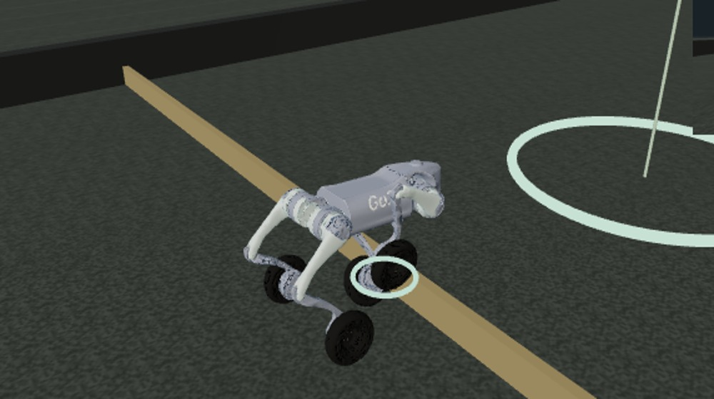

机器人拍到的照片01 / INPUT

真实上传的原图查看照片 ↗
◌ AHOLO 全球 3D AI 黑客松 / NEXT ZENITH
机器人拍下一张石头照片，Lux3D 生成整块石头的 3D。
看清可能的另一面，再决定怎么走。

右前腿已离地 / 下一步：前移选择一条腿。抬起、前移，再落地。
每个动作，由你来操作。
THREE MISSIONS / 有目的地动手
先学会操作，再面对真正需要改变动作的障碍。
你可以自己试，也可以跟着一步一步的提示。
THE FIRST STEP / 想象从这张照片开始
机器人把实际照片交给 Lux3D，拿回完整的三维形状。你可以转动原模型，亲自看看另一面。
二者来自同一个真实 Lux3D 任务 5958685，按原字节保留。这里直接加载返回的原 GLB，由官方 @manycore/aholo-viewer 1.14.0 显示。下载原模型 · 照片、模型与来源记录 · 继续逛模型陈列室
AFTER THE MODEL / 所有判断从这里开始
用生成模型补上背面的形状，对照观测，再在模型构成的世界里预演路线。
把模型和机器人拍到的可见部分核对，选出吻合的模型，用于后面的路线预演。
 R1 原始核对结果
R1 原始核对结果通过核对的不同模型组成十二个世界。在每个世界里，让同一台机器人把候选路线完整走完。
 R1 · 六份 A × 两份 B，十二个组合
R1 · 六份 A × 两份 B，十二个组合机器人根据各个模型中的路线预演，选择执行、补充观察或停车。
 R1 · 利用 Lux3D 模型完成绕行
R1 · 利用 Lux3D 模型完成绕行Lux3D 把照片变成完整的三维形状；BeforeStep 用这些形状做观测核对和路线预演。
LUX3D IN ACTION / 模型参与实际运行
完整形状进入了路线判断，模型在作品中的作用可以从实际运行里看到。
R1 中，机器人观察一眼，利用生成模型核对和预演路线，完成绕行，并在 112.84 秒到达终点。
看 R1 的实际运行 ↗六份石头 A 模型与两份石头 B 模型组成十二个世界。机器人在每个组合中走完候选路线，再据此选择行动。
观看完整路线预演 ↗预先固定的场景组中，按统一标准识别出八个难场景。生成模型参与核对与预演，帮助机器人完成其中三场通行。
查看完整对照实验 ↗THE REAL DEMO / 原始产物与运行画面
真实照片、返回模型、官方 Viewer 展示，以及机器人在想象世界和原场景中的行动。中文配音与同稿字幕。
视频暂时未加载，可以通过上方“下载完整视频”打开。
KEEP EXPLORING / 给好奇的人
亲手操作之后，继续旋转原模型、比较原运行，或阅读正式项目报告。